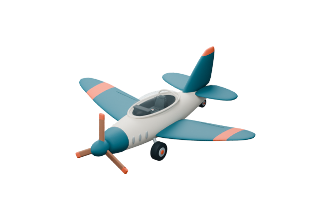
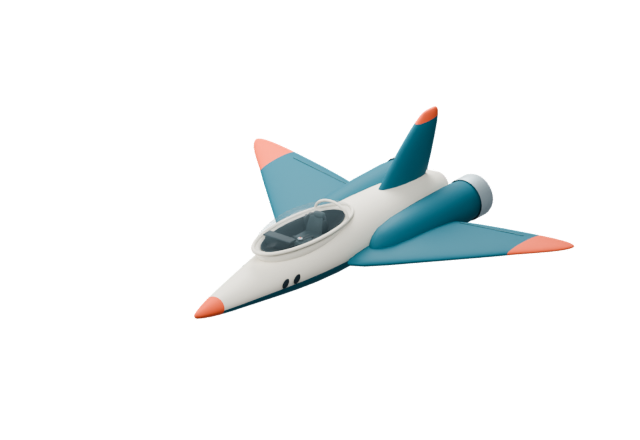
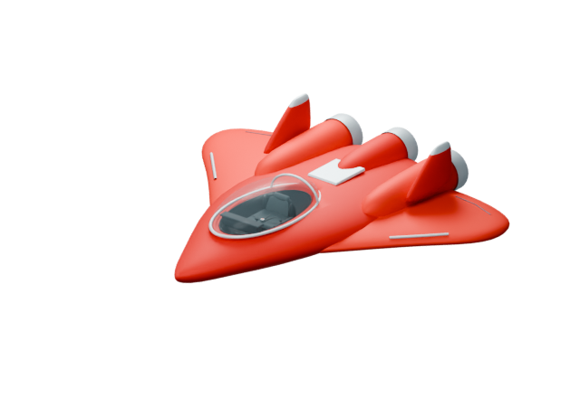
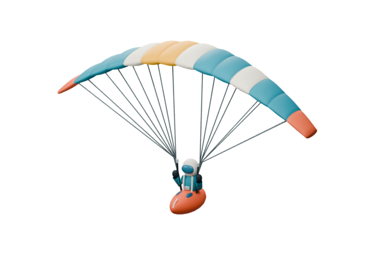

Photo
Camera
Buildings

Choose aircraft
Classic
Recommended
Balanced and easy

Super Jet
Fast, wide turns

Space Jet
Vertical thrusters

Paraglider
Gentle unpowered glide
Classic
Propeller plane
Cruise
Turbo
Bank
Use another model or flight profile
Weather
Clear
Wispy
Scattered
Cloudy
Rain
Snow
Fog
Time
12:00
00:00
06:00
12:00
18:00
24:00
Local solar time at the Grand Canyon departure.
0 km/h
Loading...
Power
Slow
Cruise
Turbo
Recover
Loading the Grand Canyon...